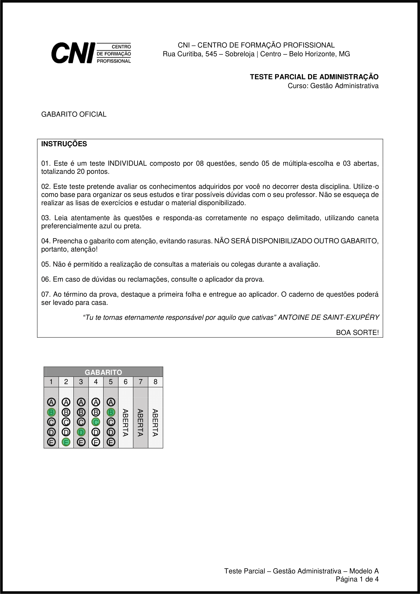

Conforme presente no nosso cronograma, nesta aula será aplicada a Prova Parcial, no valor de 10 pontos OU a Prova Final, no valor de 30 pontos.
Aplicação das Provas
Todas as provas são compostas por duas partes: o caderno de respostas e o caderno de perguntas.
O caderno de respostas é composto pelas 2 primeiras páginas da prova (1ª folha). Somente este caderno deverá ser entregue.
O caderno de perguntas é composto pelas demais páginas da prova. Este caderno pode ser levado para casa.

A primeira página do caderno de respostas é composta pelo gabarito, no qual deverão estar as respostas fechadas da prova. Ele deve ser preenchido obrigatoriamente a caneta (azul ou preta).

A segunda página do caderno de respostas é composta pela matriz, na qual deverão estar as respostas abertas da prova. Ele deve ser preenchido obrigatoriamente a caneta (azul ou preta).

Somente o caderno de respostas será considerado para a correção das provas, mesmo que a prova seja entregue inteira.
Reposição das Provas
As provas serão repostas, garantindo seu valor integral (100%), mediante a apresentação de justificativas ou atestados, que expliquem uma possível falta.
Em caso da não apresentação de justificativas por escrito das faltas ocorridas em data de prova(s), haverá:
- Reposição da PROVA PARCIAL, em data acertada, por trabalho de valor equivalente a 60% do valor da prova;
- Nulidade da nota da PROVA FINAL.
Demais casos não previstos serão analisados pelo professor ou coordenador do curso.
Todas as provas anteriormente aplicadas podem ser acessadas pelos alunos como forma de estudo e consulta nesta página.